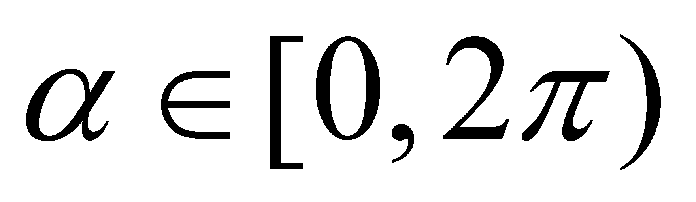
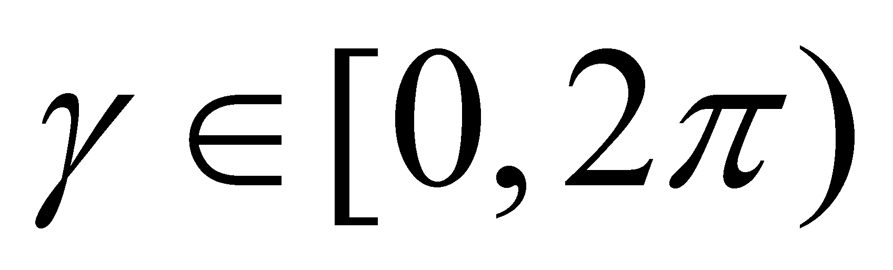
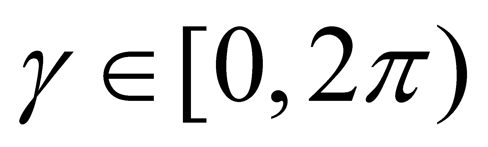
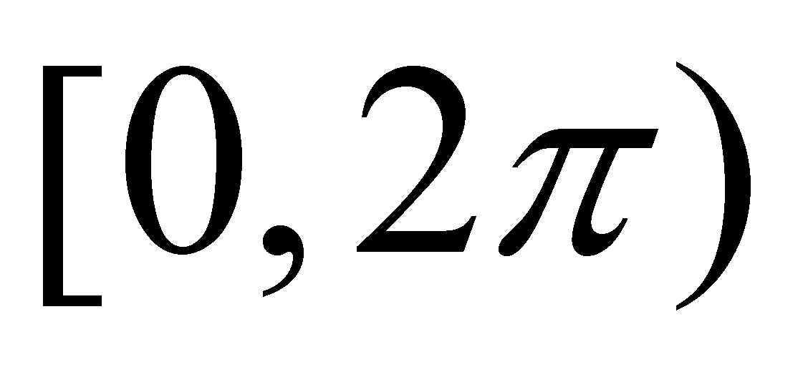

|
|
|
By considering a set of material objects which exists at the same time (with simultaneous existence), the motion processes of these objects shall be simultaneous as well. The state of these processes decomposed into SEP shall be represented by an Euler-type vector distribution (defined in chapter 5), which exists at a moment t (moment which, according to the objectual philosophy, represents the internal temporal reference of a temporal interval and not a moment under the meaning of the classic physics). The vector objects of the Euler distribution belong to the carrier vectors class and they shall have their application points in the internal T reference of the moving objects, the modulus equal to the intensity of the motion process deployed by that object, and its direction depends on the concurrent previous processes (if there is no concurrent SEP, which means that there is no interaction occurred between objects, then, the direction of the individual SEP remains invariant, rectilinear).
Let us presume that
the Euler distribution of the moving SEP of the objects is a
stochastic (chaotic) one, which means that SEP modulus is included
into a known and finite value interval, and SEP directions are
uniformly distributed in the intervals
,
 and,
evaluated against the axes of reference. It is clear that at the
level of an individual process and during a period short enough in
order to allow that the objects’ motion velocity to be
invariant, the character of this process is undoubtedly vectorial.
However, the situation may be changed if the temporal observation
interval is longer, so that the velocity of the motion process of an
object to have numerous changes on the direction and modulus. In
chapters 4 and 5, we saw that this type of individual process may be
approximated by means of a series (a set) of concatenated SEP, that
the temporal distribution of these concatenated SEP is a Lagrange
distribution, and the invariant attributes (states) of these abstract
objects can have a common component (one of them is the external
reference) and against it - the specific components of each SEP.
and,
evaluated against the axes of reference. It is clear that at the
level of an individual process and during a period short enough in
order to allow that the objects’ motion velocity to be
invariant, the character of this process is undoubtedly vectorial.
However, the situation may be changed if the temporal observation
interval is longer, so that the velocity of the motion process of an
object to have numerous changes on the direction and modulus. In
chapters 4 and 5, we saw that this type of individual process may be
approximated by means of a series (a set) of concatenated SEP, that
the temporal distribution of these concatenated SEP is a Lagrange
distribution, and the invariant attributes (states) of these abstract
objects can have a common component (one of them is the external
reference) and against it - the specific components of each SEP.
If we shall take a more simple example, such as the case of the motions of a single object included into a plane, the different directions of SEP which make-up the series of concatenated processes can be evenly distributed within their existence interval , in other words, any successive direction is equally possible within the temporal observation interval. In this case, the common component of these directions is null, and according to the objectual philosophy, this means that there is no direction. However, the common component of the modules is different from zero within the same temporal interval. Therefore, we are dealing with a positive amount different from zero (the modules’ mean value), which has a null direction, otherwise speaking, a scalar. In this way, an apparently paradoxical situation occurs, in which a process (a finite series of concatenated processes is still a process, but a complex one) which actually existed on the entire temporal observation interval is represented by a scalar quantity.
In the above-mentioned example, we have taken into consideration a Lagrange distribution (a trajectory) of a single object, and in this case, the common component from a series of successive processes of a similar object should be determined. The situation is however similar if we are taking into consideration the common component of some simultaneous SEP (the aforementioned Euler distribution), but in this case, we are interested only in the spatial distribution of the SEP with simultaneous existence, rather than in the temporal distribution. Here, the situation in which this common component of SEP must be null is also likely to occur, which means that the coherent component of the Euler-type vector field should not exist, but in exchange, to be a common component of the simultaneous SEP modules, that is also a scalar. In chapter 5, we saw that this case is typical for the stochastic fluxes, fluxes which are strictly vectorial at the elementary level (of SEP), but on the global scale, they have only a scalar attribute as a result of the vanishing of the common direction. This is the notorious case of a gas from a confined and motionless container, in which SEP are the impulses of the individual molecules, with a clear vectorial character, but whose common component is a scalar which is the source of a series of scalar attributes as well, such as the pressure, the mean energy per molecule, so on.
Based on the data presented so far in this annex, the following conclusions may be drawn:
There are processes distributed either temporally or spatially, whose global representative is a scalar (the common component of the distribution elements has a null direction). In this case, we may say that a scalarization of the distributed process takes place.
The necessary and sufficient condition required so that the scalarization to occur is that the distribution of the constitutive SEP directions to be even (all the possible directions must exist in the temporal or spatial computation interval, so that their common component to be null, or otherwise speaking, the components’ directions must be equiprobable).
It is possible that other scalar attributes of MS (besides the above-mentioned ones, such was, for example, the pressure) to be the result of the scalarization of some strictly vectorial processes (the internally stored fluxes), only due to an even distribution of the constitutive SEP directions. This is applicable for the electric charge, energy etc. One may notice that an even distribution of the directions of some SEP may be found in case of the stochastic motions, as well as at the coherent cyclic motions deployed on a confined trajectory (circular or elliptical rotations, vibrations etc., whose common component is null for the integers multiples observation intervals of the cycle).
Scalarization of some processes with even distribution of the directions is an abstract operation (performed into an IPS which monitors the phenomenon); the real individual or collective processes are always vectorial.
Copyright © 2006-2011 Aurel Rusu. All rights reserved.